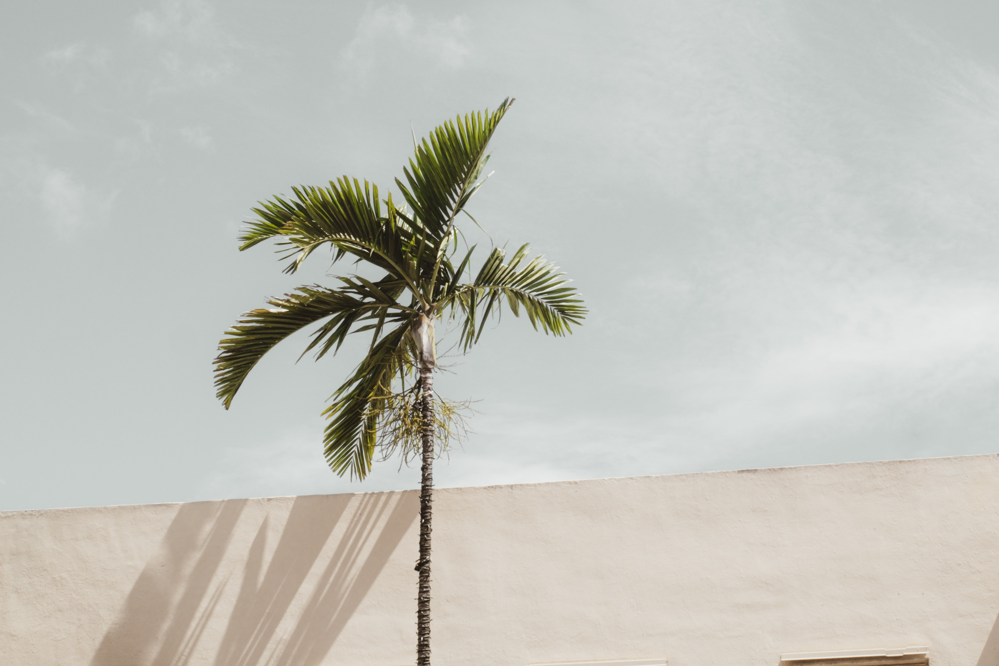

About
Culture
Lifestyle
Coast
Gallery
Newsletter
Photo Gallery
Los Cantos Bar & Restaurant, San Francisco
Akari Bay, Napa
The Bird, rooftop bar, San Francisco
Secluded street Castle Rock
Cantare Cafe, Long Beach

Goleta Galleria
Vento Cyclist Bar, Ventura
Trattoria Alla Passeggiata, Seattle